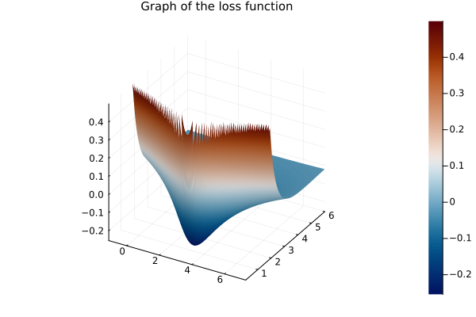
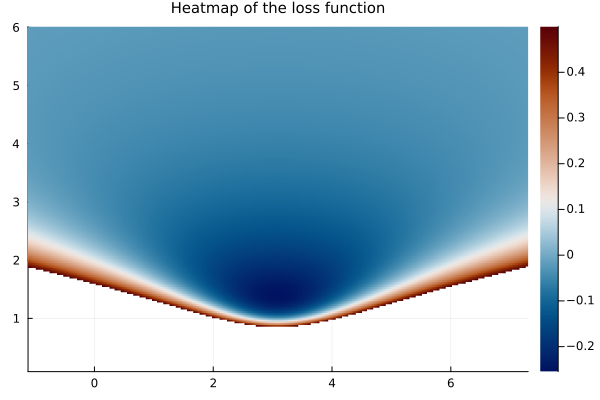
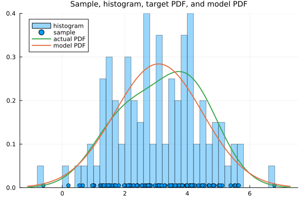

Score matching of Aapo Hyvärinen
Introduction
Aim
Here we revisit the original score-matching method of Aapo Hyvärinen (2005) and apply it to fit a normal distribution to a sample of a univariate random variable just for illustrative purposes.
Motivation
The motivation is to revisit the original idea of Aapo Hyvärinen (2005), as a first step towards building a solid background on score-matching diffusion.
Background
Generative score-matching diffusion methods use Langevin dynamics to draw samples from a modeled score function. It rests on the idea of Aapo Hyvärinen (2005) that one can directly fit the score function from the sample data, using a suitable implicit score matching loss function not depending on the unknown score function of the random variable. This loss function is obtained by a simple integration by parts on the explicit score matching objective function given by the expected square distance between the score of the model and score of the unknown target distribution, also known as the Fisher divergence. The integration by parts separates the dependence on the unknown target score function from the parameters of the model, so the fitting process (minimization over the parameters of the model) does not depend on the unknown distribution.
It is worth noticing, in light of the main objective of score-matching diffusion, that the original work of Aapo Hyvärinen (2005) has no diffusion. It is a direct modeling of the score function in the original probability space. But this is a fundamental work.
We also mention that the work of Aapo Hyvärinen (2005) uses the modified loss function to fit some very specific predefined models. There are three examples. In these examples, the gradient of the model can be computed somewhat more explicitly. There is no artificial neural network involved and no need for automatic differention (AD) (those were proposed in subsequent works, as we will see).
In a subsequent work, Köster and Hyvärinen (2010) applied the method to fit the score function from a model probability with log-likelihood obtained from a two-layer neural network, but in this case the gradient of the score function could still be expressed somehow explicitly.
With that in mind, we illustrate this approach by fitting a Gaussian distribution to samples of a univariate radom variables.
The score function
For the theoretical discussion, we denote the PDF of a multivariate random variable $\mathbf{X}$, with values in $\mathbb{R}^d$, $d\in\mathbb{N}$, by $p_\mathbf{X}(\mathbf{x})$ and the score function by
\[ \boldsymbol{\psi}_{\mathbf{X}}(\mathbf{x}) = \boldsymbol{\nabla}_{\mathbf{x}}\log(p_\mathbf{X}(\mathbf{x})) = \left( \frac{\partial}{\partial x_i} \log(p_\mathbf{X}(\mathbf{x}))\right)_{i=1, \ldots, d},\]
which is a vector field in $\mathbb{R}^d$.
The parametrized modeled score function is denoted by
\[ \boldsymbol{\psi}(\mathbf{x}; \boldsymbol{\theta}) = \boldsymbol{\nabla}_{\mathbf{x}}p(\mathbf{x}; \boldsymbol{\theta}) = \left( \frac{\partial}{\partial x_j} p(\mathbf{x}; \boldsymbol{\theta})\right)_{j=1, \ldots, d},\]
with parameter values $\boldsymbol{\theta}$.
Loss functions for score matching
The score-matching method of Aapo Hyvärinen (2005) rests on the idea of rewriting the explicit score matching loss function $J_{\mathrm{ESM}}({\boldsymbol{\theta}})$ in terms of the implicit score matching loss function $J_{\mathrm{ISM}}({\boldsymbol{\theta}})$ and then approximating the latter by the empirical implicit score matching loss function ${\tilde J}_{\mathrm{ISM}{\tilde p}_0}({\boldsymbol{\theta}})$, with
\[J_{\mathrm{ESM}}({\boldsymbol{\theta}}) = J_{\mathrm{ISM}}({\boldsymbol{\theta}}) + C \approx {\tilde J}_{\mathrm{ISM}{\tilde p}_0}({\boldsymbol{\theta}}) + C,\]
for a constant $C$ (with respect to the parameters $\boldsymbol{\theta}$ of the model), so that the optimization process has (approximately) the same gradients
\[\boldsymbol{\nabla}_{\boldsymbol{\theta}} J_{\mathrm{ESM}}({\boldsymbol{\theta}}) = \boldsymbol{\nabla}_{\boldsymbol{\theta}} J_{\mathrm{ISM}}({\boldsymbol{\theta}}) \approx \boldsymbol{\nabla}_{\boldsymbol{\theta}} {\tilde J}_{\mathrm{ISM}{\tilde p}_0}({\boldsymbol{\theta}}).\]
More precisly, the idea of the score-matching method is as follows.
1. Start with the explicit score matching
Fit the model by minimizing the expected square distance between the score function of the model, $\boldsymbol{\psi}(\mathbf{x}; {\boldsymbol{\theta}}),$ and the actual score function $\boldsymbol{\psi}_{\mathbf{X}}(\mathbf{x})$, which is termed explicit score matching (ESM),
\[ J_{\mathrm{ESM}}({\boldsymbol{\theta}}) = \frac{1}{2}\int_{\mathbb{R}^d} p_{\mathbf{X}}(\mathbf{x}) \left\|\boldsymbol{\psi}(\mathbf{x}; {\boldsymbol{\theta}}) - \boldsymbol{\psi}_{\mathbf{X}}(\mathbf{x})\right\|^2\;\mathrm{d}\mathbf{x}.\]
Since the score function is the gradient of the logpdf, this is connected with the Fisher divergence
\[ F(p_{\mathbf{X}}, p_{\boldsymbol{\theta}}) = \int_{\mathbb{R}^d} p_{\mathbf{X}}(\mathbf{x}) \left\| \nabla_{\mathbf{x}}\log p_{\mathbf{X}}(\mathbf{x}) - \nabla_{\mathbf{x}}\log p(\mathbf{x}; \boldsymbol{\theta})\right\|^2 \;\mathrm{d}\mathbf{x},\]
except that the modeled score function may not be exactly the gradient of a probability density function (the constraint of being the gradient of a function might not be valid for some models such as the usual neural networks).
2. Rewrite it with the implicit score matching
Use integration by parts in the expectation to write that
\[ J_{\mathrm{ESM}}({\boldsymbol{\theta}}) = J_{\mathrm{ISM}}({\boldsymbol{\theta}}) + C,\]
where $C$ is constant with respect to the parameters, so we only need to minimize ${\tilde J}_{\mathrm{ISM}}$, given by
\[ J_{\mathrm{ISM}}({\boldsymbol{\theta}}) = \int_{\mathbb{R}} p_{\mathbf{X}}(\mathbf{x}) \left( \frac{1}{2}\left\|\boldsymbol{\psi}(\mathbf{x}; {\boldsymbol{\theta}})\right\|^2 + \boldsymbol{\nabla}_{\mathbf{x}} \cdot \boldsymbol{\psi}(\mathbf{x}; {\boldsymbol{\theta}}) \right)\;\mathrm{d}\mathbf{x},\]
which does not involve the unknown score function of ${\mathbf{X}}$. This is called implicit score matching (ISM).
Notice the two functions have the same gradient, hence the minimization is, theoretically, the same (apart from the approximation with the empirical distribution and the different round-off errors). This implicit score matching loss function, however, involves the gradient of the modeled score function, which might be expensive to compute.
3. Approximate it with the empirical implicit score matching
In practice, the implicit score-matching loss function, which depends on the unknown $p_\mathbf{X}(\mathbf{x})$, is estimated via the empirical distribution, obtained from the sample data $(\mathbf{x}_n)_{n=1}^N$. Thus, we minimize
\[ {\tilde J}_{\mathrm{ISM}{\tilde p}_0} = \frac{1}{N}\sum_{n=1}^N \left( \frac{1}{2}\|\boldsymbol{\psi}(\mathbf{x}_n; {\boldsymbol{\theta}})\|^2 + \boldsymbol{\nabla}_{\mathbf{x}} \cdot \boldsymbol{\psi}(\mathbf{x}_n; {\boldsymbol{\theta}}) \right).\]
where the empirical distribution is given by
\[ {\tilde p}_0 = \frac{1}{N} \sum_{n=1}^N \delta_{\mathbf{x}_n}.\]
Therefore, we call this the empirical implicit score matching.
Concerning the gradient in the loss function
As mentioned before, computing a derivative to form the loss function becomes expensive when combined with the usual optimization methods to fit a neural network, as they require the gradient of the loss function itself, i.e. the optimization process involves the gradient of the gradient of something. Because of that, other methods are developed, such as using kernel density estimation, auto-encoders, finite-differences, and so on. We will explore them in due course. For the moment, we will just sketch the proof of $J_{\mathrm{ESM}}({\boldsymbol{\theta}}) = J_{\mathrm{ISM}}({\boldsymbol{\theta}}) + C$ and apply the method to models for which the gradient can be computed more explicitly.
Proof that $J_{\mathrm{ESM}}({\boldsymbol{\theta}}) = J_{\mathrm{ISM}}({\boldsymbol{\theta}}) + C$
We separate the one-dimensional from the multi-dimensional case for the sake of clarity.
One-dimensional case
We start with the one-dimensional version of the proof from Aapo Hyvärinen (2005). In this case,
\[ J_{\mathrm{ISM}}({\boldsymbol{\theta}}) = \int_{\mathbb{R}} p_X(x) \left( \frac{1}{2}\psi(x; {\boldsymbol{\theta}})^2 + \frac{\partial}{\partial x} \psi(x; {\boldsymbol{\theta}}) \right)\;\mathrm{d}x.\]
Since this is a one-dimensional problem, the score function is a scalar and we have
\[ \|\psi(x; {\boldsymbol{\theta}}) - \psi_X(x)\|^2 = \psi(x; {\boldsymbol{\theta}})^2 - 2\psi(x; {\boldsymbol{\theta}}) \psi_X(x) + \psi_X(x)^2.\]
Thus
\[ J_{\mathrm{ESM}}({\boldsymbol{\theta}}) = \frac{1}{2}\int_{\mathbb{R}} p_X(x) \left(\psi(x; {\boldsymbol{\theta}})^2 - 2\psi(x; {\boldsymbol{\theta}})\psi_X(x)\right)\;\mathrm{d}x + C,\]
where
\[ C = \frac{1}{2}\int_{\mathbb{R}} p_X(x) \psi_X(x)^2\;\mathrm{d}x\]
does not depend on ${\boldsymbol{\theta}}$.
For the mixed term, we use that the score function is
\[ \psi_X(x) = \frac{\mathrm{d}}{\mathrm{d}x}\log(p_X(x)).\]
Differentiating the logarithm and using integration by parts, we find
\[\begin{align*} -\int_{\mathbb{R}} p_X(x) \psi(x; {\boldsymbol{\theta}})\psi_X(x)\;\mathrm{d}x & = -\int_{\mathbb{R}} p_X(x) \psi(x; {\boldsymbol{\theta}})\frac{\mathrm{d}}{\mathrm{d}x}\log(p_X(x))\;\mathrm{d}x \\ & = -\int_{\mathbb{R}} p_X(x) \psi(x; {\boldsymbol{\theta}})\frac{1}{p_X(x)}\frac{\mathrm{d}}{\mathrm{d}x}p_X(x)\;\mathrm{d}x \\ & = -\int_{\mathbb{R}} \psi(x; {\boldsymbol{\theta}})\frac{\mathrm{d}}{\mathrm{d}x}p_X(x)\;\mathrm{d}x \\ & = \int_{\mathbb{R}} \frac{\partial}{\partial x}\psi(x; {\boldsymbol{\theta}})p_X(x)\;\mathrm{d}x. \end{align*}\]
Thus, we rewrite $J_{\mathrm{ESM}}({\boldsymbol{\theta}})$ as
\[ J_{\mathrm{ESM}}({\boldsymbol{\theta}}) = \int_{\mathbb{R}} p_X(x) \left(\frac{1}{2}\psi(x; {\boldsymbol{\theta}})^2 + \frac{\partial}{\partial x}\psi(x; {\boldsymbol{\theta}})\right)\;\mathrm{d}x + C,\]
which is precisely $J_{\mathrm{ESM}}({\boldsymbol{\theta}}) = J_{\mathrm{ISM}}({\boldsymbol{\theta}}) + C$.
For this proof to be justified, we need the constant to be finite,
\[ C = \frac{1}{2}\int_{\mathbb{R}} p_X(x) \psi_X(x)^2\;\mathrm{d}x < \infty;\]
the score function of the model not to grow too fast at infinity,
\[ \psi(x; {\boldsymbol{\theta}}) p_X(x) \rightarrow 0, \quad |x| \rightarrow \infty,\]
for every value ${\boldsymbol{\theta}}$ of the parameter; and the score function of the model to be smooth everywhere on the support of the distribution, again for every value of the parameter.
Multi-dimensional case
For the multi-dimensional version of the proof, we have
\[ \|\boldsymbol{\psi}(\mathbf{x}; {\boldsymbol{\theta}}) - \boldsymbol{\psi}_{\mathbf{X}}(\mathbf{x})\|^2 = \|\boldsymbol{\psi}(\mathbf{x}; {\boldsymbol{\theta}})\|^2 - 2\boldsymbol{\psi}(\mathbf{x}; {\boldsymbol{\theta}}) \cdot \boldsymbol{\psi}_{\mathbf{X}}(\mathbf{x}) + \|\boldsymbol{\psi}_{\mathbf{X}}(\mathbf{x})\|^2.\]
Thus,
\[ J_{\mathrm{ESM}}({\boldsymbol{\theta}}) = \frac{1}{2}\int_{\mathbb{R}} p_{\mathbf{X}}(\mathbf{x}) \left(\|\boldsymbol{\psi}(\mathbf{x}; {\boldsymbol{\theta}})\|^2 - 2\boldsymbol{\psi}(\mathbf{x}; {\boldsymbol{\theta}})\boldsymbol{\psi}_{\mathbf{X}}(\mathbf{x})\right)\;\mathrm{d}\mathbf{x} + C,\]
where
\[ C = \frac{1}{2}\int_{\mathbb{R}} p_{\mathbf{X}}(\mathbf{x}) \boldsymbol{\psi}_{\mathbf{X}}(\mathbf{x})^2\;\mathrm{d}\mathbf{x}\]
does not depend on ${\boldsymbol{\theta}}$.
For the middle term, we use explicitly that the score function is the gradient of the log of the pdf of the distribution,
\[ \boldsymbol{\psi}_{\mathbf{X}}(\mathbf{x}) = \boldsymbol{\nabla}_{\mathbf{x}}\log(p_{\mathbf{X}}(\mathbf{x})).\]
Differentiating the logarithm and using the Divergence Theorem for the integration by parts, we find
\[\begin{align*} -\int_{\mathbb{R}} p_{\mathbf{X}}(\mathbf{x}) \boldsymbol{\psi}(\mathbf{x}; {\boldsymbol{\theta}}) \cdot \boldsymbol{\psi}_{\mathbf{X}}(\mathbf{x})\;\mathrm{d}\mathbf{x} & = -\int_{\mathbb{R}} p_{\mathbf{X}}(\mathbf{x}) \boldsymbol{\psi}(\mathbf{x}; {\boldsymbol{\theta}})\boldsymbol{\nabla}_{\mathbf{x}}\log(p_{\mathbf{X}}(\mathbf{x}))\;\mathrm{d}\mathbf{x} \\ & = -\int_{\mathbb{R}} p_{\mathbf{X}}(\mathbf{x}) \boldsymbol{\psi}(\mathbf{x}; {\boldsymbol{\theta}})\frac{1}{p_{\mathbf{X}}(x)}\boldsymbol{\nabla}_{\mathbf{x}}p_{\mathbf{X}}(\mathbf{x})\;\mathrm{d}\mathbf{x} \\ & = -\int_{\mathbb{R}} \boldsymbol{\psi}(\mathbf{x}; {\boldsymbol{\theta}})\boldsymbol{\nabla}_{\mathbf{x}}p_{\mathbf{X}}(\mathbf{x})\;\mathrm{d}\mathbf{x} \\ & = \int_{\mathbb{R}} \boldsymbol{\nabla}_{\mathbf{x}} \cdot \boldsymbol{\psi}(\mathbf{x}; {\boldsymbol{\theta}})p_{\mathbf{X}}(\mathbf{x})\;\mathrm{d}\mathbf{x}. \end{align*}\]
Thus, we rewrite $J_{\mathrm{ESM}}({\boldsymbol{\theta}})$ as
\[ J_{\mathrm{ESM}}({\boldsymbol{\theta}}) = \int_{\mathbb{R}} p_{\mathbf{X}}(\mathbf{x}) \left(\frac{1}{2}\|\boldsymbol{\psi}(\mathbf{x}; {\boldsymbol{\theta}})\|^2 + \boldsymbol{\nabla}_{\mathbf{x}} \cdot \boldsymbol{\psi}(\mathbf{x}; {\boldsymbol{\theta}})\right)\;\mathrm{d}\mathbf{x} + C,\]
which is precisely $J_{\mathrm{ESM}}({\boldsymbol{\theta}}) = J_{\mathrm{ISM}}({\boldsymbol{\theta}}) + C$.
Similarly to the one-dimensional case, for this proof to be justified, we need the constant to be finite,
\[ C = \frac{1}{2}\int_{\mathbb{R}} p_{\mathbf{X}}(\mathbf{x}) \boldsymbol{\psi}_{\mathbf{X}}(\mathbf{x})^2\;\mathrm{d}\mathbf{x} < \infty;\]
the score function of the model not to grow too fast at infinity,
\[ \boldsymbol{\psi}(\mathbf{x}; {\boldsymbol{\theta}}) p_{\mathbf{X}}(\mathbf{x}) \rightarrow \mathbf{0}, \quad |\mathbf{x}| \rightarrow \infty,\]
for every value ${\boldsymbol{\theta}}$ of the parameter; and the score function of the model to be smooth everywhere on the support of the distribution, again for every value of the parameter.
About the conditions on the model function
The conditions on the smoothness and on the growth of the score function of the model distribution are usually fine for the common neural network models when using smooth and uniformly bounded activation functions. Piecewise smooth and/or growing activation functions might fail these requirements, depending on the unkown target distribution.
Numerical example
We exemplify the score-matching method fitting a Normal distribution to a synthetic univariate random variable $X$. We take as the target model a Gaussian mixture with the corresponding means relatively close to each other so that fitting a single Normal distribution to them is not too far off.
Say we have a sample $\{x_n\}_{n=1}^N$ of $X$, where $N\in\mathbb{N}$.
![]()
The model is a score function of a Gaussian distribution $\mathcal{N}(\mu, \sigma^2)$, whose PDF is
\[ p_{\theta}(x) = p(x; \mu, \sigma) = \frac{1}{\sqrt{2\pi}\sigma} e^{-\frac{1}{2}\left(\frac{x - \mu}{\sigma}\right)^2},\]
with parameters $\boldsymbol{\theta} = (\mu, \sigma)$. The logpdf is
\[ \log p(x; \mu, \sigma) = -\frac{1}{2}\left(\frac{x - \mu}{\sigma}\right)^2 - \log\left(\sqrt{2\pi}\sigma\right).\]
And the score function is
\[ \psi(x; \mu, \sigma) = \frac{\partial}{\partial x} p(x; \mu, \sigma) = - \frac{x - \mu}{\sigma^2},\]
The derivative of the score function, needed for the loss function, is constant with respect to $x$, but depends on the parameter $\sigma$,
\[ \frac{\partial}{\partial x} \psi(x; \mu, \theta) = -\frac{1}{\sigma^2}.\]
Thus, the implicit score matching loss becomes
\[ J_{\mathrm{ISM}}({\boldsymbol{\theta}}) = {\tilde J}_{\mathrm{ISM}}(\mu, \sigma) = \int_{\mathbb{R}} p_X(x) \left( \frac{1}{2}\left(\frac{x - \mu}{\sigma^2}\right)^2 - \frac{1}{\sigma^2} \right)\;\mathrm{d}x.\]
The approximation with the empirical distribution is
\[ {\tilde J}_{\mathrm{ISM}{\tilde p}_0}({\boldsymbol{\theta}}) = {\tilde J}_{\mathrm{ISM}{\tilde p}_0}(\mu, \sigma) = \frac{1}{N} \sum_{n=1}^N \left( \frac{1}{2}\left(\frac{x_n - \mu}{\sigma^2}\right)^2 - \frac{1}{\sigma^2} \right).\]
Computing this loss for the given model yields the following plot over a reasonable range of values for $\mu$ and $\sigma$.
In this example, the optimal parameters can be found numerically to be approximately $\mu = 3.2$ and $\sigma = 1.5$, or more precisely,
μ = 3.0819, σ = 1.4045We do not actually perform a minimization in this case. We simply sweep the values computed for the previous two plots and find the location of the smallest one. This is good enough for this illustrative example.
With that approximate minimizer, we have our modeled Normal distribution fitting the sample. The result can be visualized as follows.
Conclusion
This concludes our review of Aapo Hyvärinen (2005) and illustrates the use of empirical implicit score matching to model a univariate random variable by a closed-form model.
The work of Aapo Hyvärinen (2005) has some more elaborate models, namely a i) multivariate Gaussian model; a ii) basic independent component analysis model; and an iii) overcomplete model for image data.
As we mentioned earlier, our interest, however, is on modeling directly the score function using a neural network and for which the gradient needs to be handled properly. For that, other techniques were developed, which will be examined next.
References
- Aapo Hyvärinen (2005), "Estimation of non-normalized statistical models by score matching", Journal of Machine Learning Research 6, 695-709
- U. Köster, A. Hyvärinen (2010), "A two-layer model of natural stimuli estimated with score matching", Neural. Comput. 22 (no. 9), 2308-33, doi: 10.1162/NECOa00010